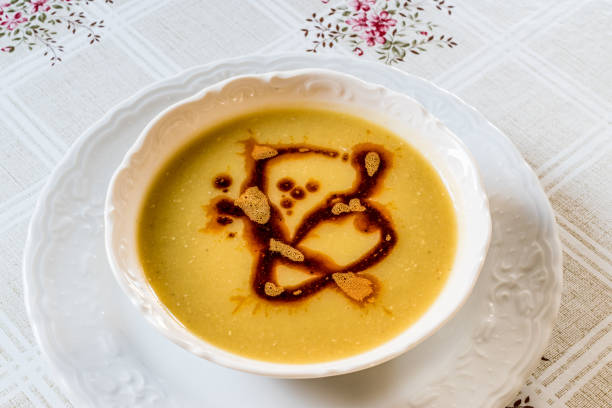

Yaz kış demeden her mevsim, her zaman, her durumda elimizin gittiği tariftir mercimek çorbası tarifi. En çok sevilen çorbalardan biridir o!
Ve işte çok seveceğiniz tarifi sizler için hazır...

Mercimek Çorbası
Malzemeler
- 3 yemek kaşığı ayçiçek yağı
- 1 adet kuru soğan (iri doğranmış)
- 1 yemek kaşığı un
- 1 adet havuç (iri doğranmış)
- 1 adet patates (büyük boy, iri doğranmış)
- 1 tatlı kaşığı tuz
- 1 çay kaşığı karabiber
- 1,5 su bardağı kırmızı ya da sarı mercimek
- 6 su bardağı sıcak su (1 adet et su tablet ile hazırlanmış)
Üzeri için
- 3 yemek kaşığı sıvı yağ
- 2 yemek kaşığı tereyağı
- 1 tatlı kaşığı kırmızı toz biber
Nasıl yapılır?
- Derin bir tencereye 3 yemek kaşığı sıvı yağ ekleyin ve iri doğranmış 1 adet büyük soğanı sıvı yağ ile birlikte kavurun.
- Kavrulan soğanlara 1 yemek kaşığı unu ekleyin ve kokusu çıkıp, renk alana kadar kavurma işlemini sürdürün. İri parçalar halinde doğradığınız birer adet havuç ve patatesi tencereye aktarıp karıştırmaya devam edin.
- Tuz, karabiber ve bol suda yıkadıktan sonra suyunu süzdürdüğünüz 1,5 su bardağı mercimeği de ilave edin ve son kez güzelce karıştırın.
- 6 su bardağı sıcak suyu da tencereye ilave edin.
- Ardından kapağını kapatın, patates ve havuçlar yumuşayana kadar ara ara karıştırarak 40 dakika kadar pişirin.
- Çorba piştikten sonra pürüzsüz bir kıvam alması için; el blenderından geçirin. 5 dakika daha pişirdikten sonra ocaktan alın.
- 3 yemek kaşığı sıvı yağ ve 2 yemek kaşığı tereyağını bir tavada kızdırın. Üzerine 1 tatlı kaşığı toz kırmızı biberi ekleyin ve 2 dakika yağı kızdırdıktan sonra ocaktan alın.
- Çorbayı bir kaseye alın ve üzerine kızdırdığınız yağdan gezdirip servis edin.
İŞTE PÜF NOKTALAR!!!
- Mercimeklerin pişerken köpürmemesi için bol suda mercimekleri ovarak yıkayın. "Ovarak" kısmı burada önemli. Çünkü mercimeği suya bırakmak aynı etkiyi sağlamıyor.
- Doğranmış soğanları tereyağında sotelerken asla çok yüksek ateşte pişirmeyin. Kısık ateş kulanın
- O nefis kıvamı veren ise un! Unu çırpma teliyle iyice tereyağında kavurun. Çırpma teli de burada önemli bir detay, zira unda hiç topak kalmamasını ancak bu şekilde başarabilirsiniz.
AFİYET OLSUN